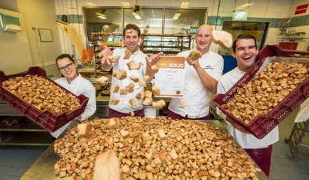

Ons verhaal
BuurtBakkers is ontstaan uit een passie voor ambacht en gemeenschap. Wat begon als een kleine droom aan de keukentafel, groeide in 2015 uit tot een warme, lokale bakkerij in het hart van de buurt.
Elke ochtend staan we vroeg op om vers brood en gebak te maken, met respect voor traditionele recepten en moderne smaken. Voor ons is een bakkerij meer dan een winkel: het is een plek waar mensen samenkomen, elkaar begroeten en genieten van eerlijke producten.
We werken zoveel mogelijk met lokale leveranciers en kiezen bewust voor kwaliteit boven massaproductie. Zo proberen we elke dag opnieuw iets positiefs bij te dragen aan onze buurt.
Onze missie
De buurt verbinden met eerlijk, vers en lokaal brood.
Wij willen mensen laten genieten van ambachtelijke producten die met zorg en aandacht zijn gemaakt. Door lokaal te produceren en samen te werken met leveranciers uit de omgeving, bouwen we mee aan een duurzame en hechte gemeenschap.
Onze waarden
🥖 Kwaliteit
We gebruiken hoogwaardige ingrediënten en werken volgens ambachtelijke methodes. Elk product dat onze bakkerij verlaat, moet iets zijn waar we trots op zijn.
🌱 Duurzaamheid
We denken bewust na over onze impact op het milieu. Van lokale ingrediënten tot het beperken van voedselverspilling: kleine stappen maken een groot verschil.
🤝 Lokale samenwerking
We geloven sterk in de kracht van de buurt. Daarom werken we samen met lokale boeren, leveranciers en ondernemers.
😊 Klantgerichtheid
Onze klanten staan centraal. Een glimlach, een vriendelijk woord en persoonlijke service zijn voor ons even belangrijk als goed brood.
Ons team
Achter BuurtBakkers staat een enthousiast team van bakkers en winkelmedewerkers die elke dag met passie aan de slag gaan. Samen zorgen we voor verse producten, een warme sfeer en tevreden klanten.
